Práctica 3: Señales continuas
Contents
Datos generales:
Autores:
- Marmolejo Martínez Hamlet
- Ortiz Velazco Jaime Jonathan
- Perez Sanchez Isaac
Grupo: 2TV2
Profesor: Dr. Rafael Martinez Martinez
Objetivos:
- Manipulación básica de MATLAB
- Gráficas de señales reales y complejas continuas
- Transformación de señales continuas (escalamientos y traslaciones)
- Calculo de energía y potencia de señales continuas
Introduccion
A continuacion observaremos atravez de Matlab la graficacion de señales tanto reales como complejas, ademas de utilizar el software como ayuda para la rapida obtencion de transformaciones de señales continuas, con sus respetivos translaciones y escalamientos.
Desarrollo
Funcion uno
Crea una función que se llame fun1 y reciba dos parametros y 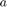 la función debe regresar la evaluación 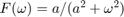, esta función debe trabajr con 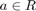.
La funcion quedara de la siguiente manera:
function [f]=fun1(omega,a) %f la tomaremos como F(w) f=a/(a^2+omega^2); end
Ejercicio dos
Esta imagen muestra la gráfica de 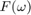 vs en el intervalo 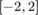 para

Ejercicio tres
syms t w syms a positive f= exp(-2.*t)*heaviside(t); F=fourier(f); F
F = 1/(2 + w*1i)
Ejercicio cuatro
Realizamos una funcion anonima que calcule 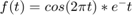. Que quedara de la siguiente manera:
f = @(t) exp(-t).*cos(2*pi*t); % El unico parametro que hay que pasarle % es el valor de t. Ejemplo: f(0)
ans =
1
Tambien podemos evaluar la funcion en un vector si lo declaramos, por ejemplo:
t=[-2:2]; f(t)
ans =
7.3891 2.7183 1.0000 0.3679 0.1353
Estos valores que toma f(t) pueden ser graficados con la funcion plot de la siguiente manera:
plot(t,f(t)); xlabel('t'); ylabel('f(t)'); grid;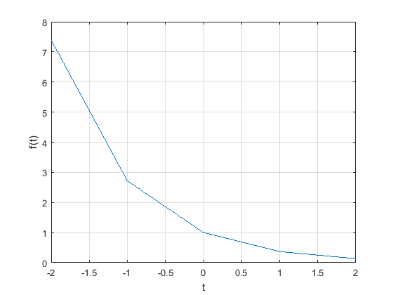
Aunque la funcion anterior nos diera la grafica de la funcion se puede notar que por la cantidad de puntos mostrados no vemos el comportamiento que quisieramos. Para arreglar esto lo que tenemos que hacer es añadir mas puntos a nuestro vector como se muestra a continuacion.
t =[-2:0.01:2]; % Con esto nos evaluara la funcion en 100 puntos plot(t,f(t)); xlabel('t'); ylabel('f(t)'); grid;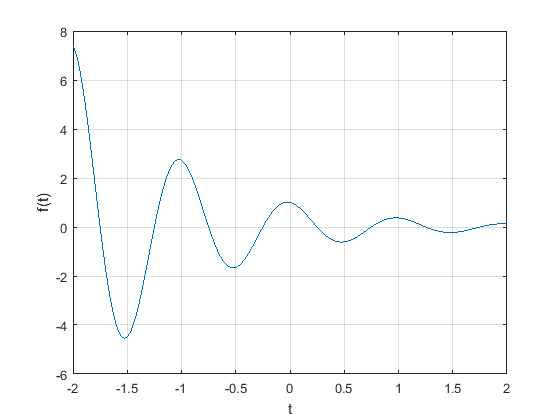
Esta ultima grafica ya es muy parecida a lo que buscabamos.
El escalon unitario es una de las funciones mas utiles y que en muchos casos nos facilita la forma de trabajar con otras funciones, y por todo esto es que quisieramos tenerla disponible en Matlab y para ello nuevamente utilizaremos las funciones anonimas.
En matlab se pueden hacer comparaciones si asi lo queremos. Cuando la comparacion es verdadera regresa un 1 y si es falsa un 0. Matlab nos brinda seis operadores validos para comparar, los cuales son: '<', '>', '>=', '<=', '==' y '~='.
Dicho esto podemos definir nuestro escalon con la ayuda del operador >=
u = @(t) t>=0; % Cualquier funcion con discontinuidades es dificl de graficar. Hagamoslo % para t=(-2,2) t=[-2:2]; plot(t, u(t)); xlabel('t'); ylabel('u(t)');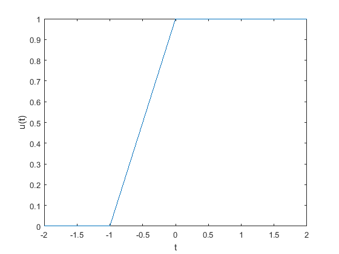
Claramente notamos que la grafica de arriba es dificil de ver y pareciera una grafica totalmente distinta y esto se debe a que los ejes no estan bien distribuidos, cosa que podemos arreglar con la funcion axis que nos ayuda a marcar los limites los ejes y tambien agregando mas puntos al vector para que la linea no parezca diagonal.
t =[-2:0.01:2]; plot (t,u(t)); xlabel('t'); ylabel('u(t)'); axis ([-2 2 -0.1 1.1]);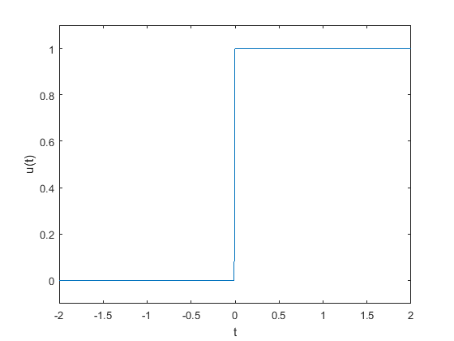
Los operadores logicos se pueden combinar, podemos probar esto realizando una funcion p(t)=u(t)-u(t-1)
p = @(t) (t>=0) & (t<1); t = [-1:0.01:2]; plot(t,p(t)); xlabel('t'); ylabel('p(t) = u(t)-u(t-1)'); axis ([-1 2 -.1 1.1]);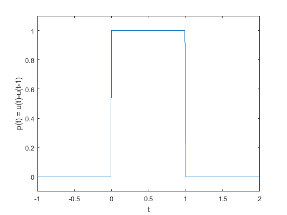
Algunas veces necesitaremos multiplicar funciones ya que buscamos escalarlas o desplazarlas.
Consideremos la funcion 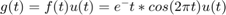 .Matlab no nos permite multiplicar funciones anonimas, para ello debemos tener bien definida a 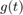
g = @(t) exp(-t).*cos(2*pi*t).*(t>=0);
La definicion general de un escalamiento y un desplazamiento seria 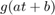 donde a y b son constantes reales arbitrarias. Como ejemplo hagamos a 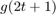 en (-2<t<2).
t = [-2:0.01:2]; plot(t,g(2*t+1)); xlabel('t'); ylabel('g(2t+1)'); grid;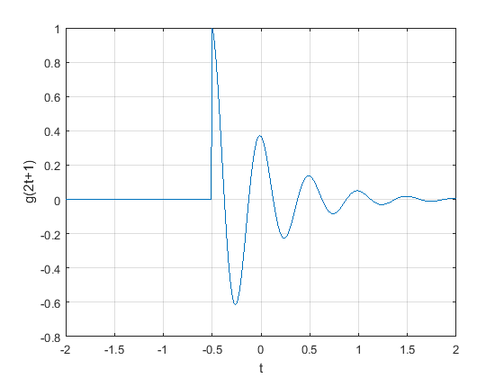
La grafica es la esperada ya que deberia comenzar en -0.5 y tener oscilaciones mas frecuentes.
Lo que haremos ahora sera graficar una funcion un poco mas compleja, 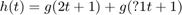 en (-2<t<2)
plot(t,g(-t+1)); xlabel('t'); ylabel('g(-t+1)'); grid; plot(t,g(2*t+1) +g(-t+1)); xlabel('t'); ylabel('h(t)'); grid;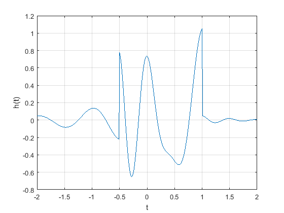
Ejercicio cinco
Realizamos una funcion anonima que calcule . Que quedara de la siguiente manera:
t = (-8:0.01:4); f = @(t) -t.*(t>=-4)+2.*t.*(t>=0)-t.*(t>=2); % El unico parametro que hay que pasarle % es el valor de t. Ejemplo: subplot(6,1,1); plot(t,f(t)); %ahora resolvamos para el inciso a) x(t-4) subplot(6,1,2); plot(t,f(t-4)); %ahora resolvamos para el inciso b) x(t/1.5) subplot(6,1,3); plot(t,f(t./1.5)); %ahora resolvamos para el inciso c)x(-t) subplot(6,1,4); plot(t,f(-t)); %ahora resolvamos para el inciso d)x(2t-4) subplot(6,1,5); plot(t,f(2.*t-4)); %ahora resolvamos para el inciso d)x(2-t) subplot(6,1,6); plot(t,f(2-t));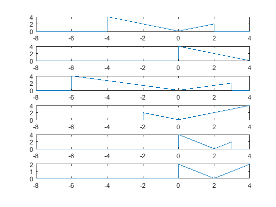
%%Ejercicio 6 %Hacemos una funcion que recibe como parametro la formula de una señal y %regresa el resultado del calculo de su energía suponiendo que la función %de entrada es una función de energia % % La funcion quedara de la siguiente manera: % % function [energia]=ex(c,li, ls) %f la tomaremos como F(w) % energia=integral(x^2,li,ls) % end % %Ahora calculamos la energía del ejercicio 1.1.3 inciso a % syms t; % ex(1,0,1) % ex(-1,1,2) % ex(1+(-1),0,2) % ex(1-(-1),0,2) %Inciso b % ex(sin(t),0,2*pi) % ex(1,0,2*pi) % ex(sin(t)+1,0,2*pi) % ex(sin(t)-1,0,2*pi) %Inciso c % ex(sin(t),0,pi) % ex(1,0,pi) % ex(sin(t)+1,0,pi) % ex(sin(t)-1,0,pi)
%%Ejercicio 7 %Hacemos una funcion que recibe como parametro la formula de una señal y %los limites superiores e inferiores de un ciclo de la señal y se %regresa el resultado del calculo de su potencia suponiendo que la función %de entrada es una función de potencia % % % function [potencia,rms] = px(x,li,ls) % if li<0 % li=(-1)*li; % end % potencia=(1/(li+ls))*(integral(x^2,-li/2,ls/2)) % rms=sqrt(potencia) % end
%Resolvemos el ejercicio 1.1.4 %Inciso a syms x c; xt=x^3; px(-1*xt,-2,2) %Inciso b px(2*xt,-2,2) %Inciso c px(c*xt,-2,2)
potencia = 1/14 rms = 0.26726 ans = 1/14 potencia = 2/7 rms = 0.53452 ans = 2/7 potencia = c^2/14 rms = (0.071429*c^2)^(1/2) ans = c^2/14
Referencias
B. P. Lathi, Linear Systems and Signals, Second Edition, Oxford University Press, Inc., 2005, segunda edicion, pp. 689.